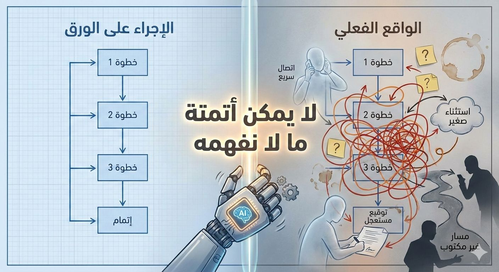
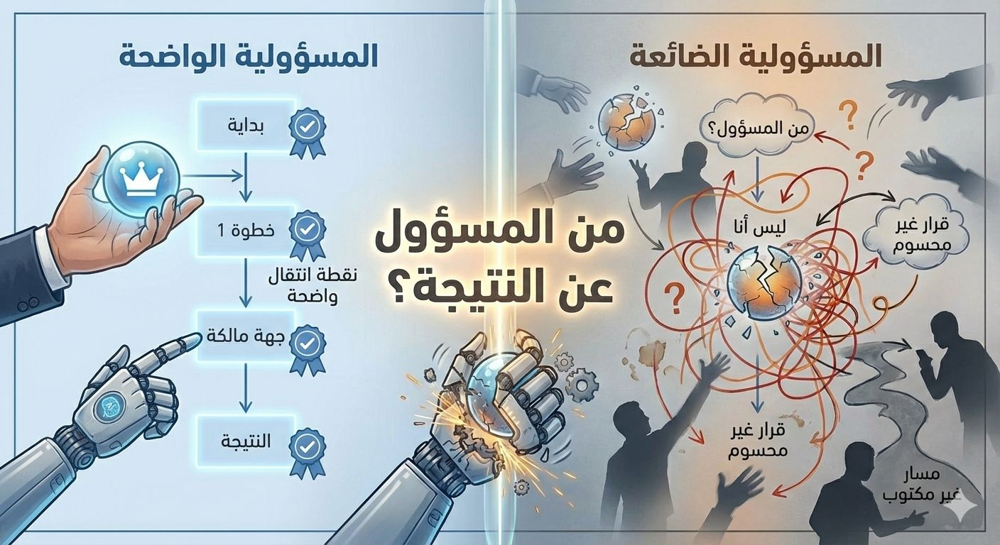

TEMPORARY PORTRAIT — replace with a high-resolution source before prototype approval
Head of Product & Technology
أقود المنتج والتقنية لبناء أنظمة ذكية تبقى تحت قيادة الإنسان.
أجمع بين قيادة المنتج والهندسة وخبرة عملية في الذكاء الاصطناعي لأحوّل الأفكار المعقدة إلى أنظمة واضحة، قابلة للفحص، ويمكن للفرق أن تثق بها.
01 · PrinciplesWhat I
What I
Believe
The operating principles behind how I lead, build, and evaluate intelligent systems.
01I believe technology should expand human judgment, not quietly replace it.
02I believe strong product and technology leadership turns complexity into shared clarity: clear decisions, clear ownership, and systems teams can trust.
03I believe AI earns its place through evidence. It should be understandable, testable, and accountable to the people affected by it.
02 · أفكار مختارة
عرض كل الكتاباتأكتب عن الأنظمة التي تعمل في الواقع، لا في العرض فقط.

الأتمتة الذكية في المؤسسات: أين تبدأ فعليًا؟
قبل اختيار التقنية، افهم الإجراء الحقيقي كما يجري على الأرض لأنك لا تستطيع أتمتة ما لا تفهمه.
←
الأتمتة الذكية تتعطل عند سؤال إداري واحد
بعد كشف الإجراء الحقيقي، يظهر سؤال لا تحله أي تقنية: من المسؤول عن النتيجة؟
←A principle for what comes next
The best wayto predict the futureis to create it.
03 · Professional proof
الخبرة التي تقف خلف الأفكار.
01Head of Product & Technologyقيادة المنتج والهندسة والجودة والتسليم ضمن نظام عمل واحد.
02AI Engineerخلفية أكاديمية وعملية في الذكاء الاصطناعي وNLP، مع تركيز على الأنظمة القابلة للفحص.
03MSc in Big Data Systemsأساس في البيانات، معالجة اللغة، وتقييم التقنية بعيدًا عن الضجيج.
04 · الخبرة وراء الأفكار
تعرّف إلى رحلتيمن AI/NLP وهندسة البرمجيات إلى قيادة المنتج والتقنية.
تعرّف إلى المحطات والمبادئ التي شكّلت طريقتي في بناء الفرق والأنظمة واتخاذ القرار.